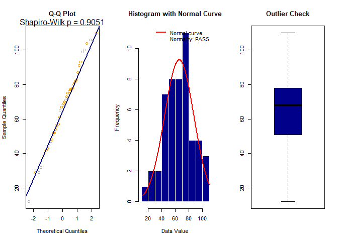

Overview
OneMeanDream provides enhanced one-sample t-test functionality with advanced statistical approximations and comprehensive diagnostics:
- 📊 Wallace Critical Value Approximation for accurate hypothesis testing
- 🔬 Hastings P-Value Approximation for computational efficiency
- ✅ Comprehensive Assumption Checking (Shapiro-Wilk normality test, outlier detection)
- 📈 Diagnostic Plots (Q-Q plot, histogram with normal curve overlay, boxplot)
Installation
You can install the development version of OneMeanDream from GitHub with:
# install.packages("devtools")
devtools::install_github("KingSSIBAL/OneMeanDream")Quick Example
Here’s a basic example showing how to perform a one-sample t-test:
library(OneMeanDream)
# Create sample data: test if earnings are significantly below $75k
set.seed(181)
earnings_data <- data.frame(
Earnings = round(rnorm(50, mean = 65, sd = 20), 0)
)
# Perform one-sample t-test
result <- oneMeanTTest(
x = "Earnings",
mu = 75,
ha = "less",
alpha = 0.05,
data = earnings_data,
plot = TRUE
)
print(result)
#>
#> One-Sample t-test
#> ------------------------------------------------------
#> Variable: Earnings
#> n: 50
#> Mean: 65.82
#> SD: 21.5792
#> ------------------------------------------------------
#> Null Hyp: mu = 75
#> Alt Hyp: mu < 75
#> ------------------------------------------------------
#> ASSUMPTION CHECKS:
#> 1. Normality (Shapiro-Wilk): SATISFIED (p = 0.905 )
#> 2. Outliers (1.5 IQR Rule): SATISFIED (0 outliers detected)
#> ------------------------------------------------------
#> t-stat: -3.0081
#> df: 49
#> Crit Val: -1.6765
#> P-value: 0.001543
#> ------------------------------------------------------
#> 95% CI: [ -Inf , 70.9364 ]
#> Decision: REJECT the null hypothesis (Ho)
#>
#> Interpretation:
#> At alpha = 0.05, we REJECT the null hypothesis (Ho). The sample mean (65.82) is significantly less than 75.
#> We are 95% confident that the true population mean is less than 70.9364.Key Features
Wallace Critical Value Approximation
Uses the Wallace approximation formula for converting z-values to t-distribution critical values:
where and (degrees of freedom).
Hastings P-Value Approximation
Implements an efficient 4-term Hastings approximation for computing p-values without relying on built-in distribution functions, ensuring computational efficiency and numerical stability.
Automatic Assumption Checks
The function automatically performs:
- Normality Testing: Shapiro-Wilk test with clear pass/fail indication
- Outlier Detection: Uses 1.5 × IQR rule to identify potential outliers
-
Visual Diagnostics: Generates three diagnostic plots:
- Q-Q plot for normality assessment
- Histogram with overlaid normal curve
- Boxplot highlighting outliers
Function Arguments
-
x: Column name (character string) containing numeric data -
mu: Hypothesized population mean under null hypothesis -
ha: Alternative hypothesis -"less","greater", or"not equal" -
alpha: Significance level (required parameter) -
data: Data frame containing the variable -
plot: Whether to display diagnostic plots (default:TRUE)
Example Output
The function returns a comprehensive list containing:
- Sample statistics (mean, SD, sample size)
- Test statistics (t-statistic, degrees of freedom, critical value)
- P-value and confidence interval
- Decision and interpretation
- Assumption check results (normality test, outlier detection)
Additional Examples
Two-Tailed Test
# Test if temperature differs from 98.6°F
temp_data <- data.frame(
Temperature = c(98.2, 98.6, 97.8, 99.1, 98.4, 98.7,
97.9, 98.5, 98.3, 98.8, 98.1, 98.6)
)
oneMeanTTest("Temperature", mu = 98.6, ha = "not equal",
alpha = 0.05, data = temp_data)Greater Than Test
# Test if scores are above 70
set.seed(456)
scores <- data.frame(
Score = round(runif(40, min = 50, max = 95), 1)
)
oneMeanTTest("Score", mu = 70, ha = "greater",
alpha = 0.05, data = scores)